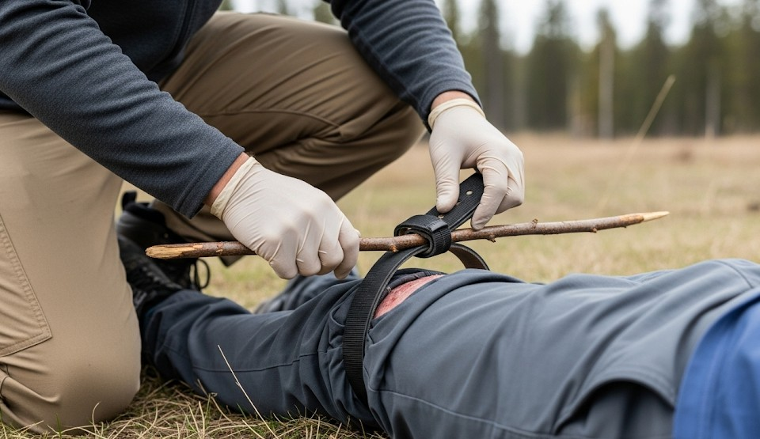

Bleeding Control: Tourniquets, Packing, Pressure
Objective
Control massive hemorrhage within 60 seconds using TQs, wound packing, and pressure.
MARCH Priority
Handle Massive bleeding first; then Airway, Respiration, Circulation, Hypothermia.
Tourniquet (TQ)
- Place 5–7 cm above wound (not on joint).
- Tighten until bleeding stops and distal pulse is gone.
- Note time; do not remove until higher care.
Wound Packing
- Expose wound; locate source.
- Pack hemostatic gauze firmly; maintain pressure 3 minutes.
- Wrap pressure bandage.
Chest Wounds
Seal with vented chest seals; monitor breathing.
Real Example
Bystanders stopped a thigh laceration bleed with a CAT TQ in 40 seconds; EMS arrived 8 minutes later.
Checklist
- CAT/SOF‑T TQ
- Hemostatic gauze
- Pressure bandage
- Gloves, shears
Contingencies
- TQ ineffective → second TQ proximal.
- Severe bleeding in junctions → pack aggressively.
After-Action
Train quarterly with a timer; label kit with expiration dates.
← Previous | All Articles | Next →